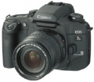

器材库 > 胶片单反相机 > EOS 30V/33V/7s/Elan 7NE/7N

规格总览
产品类型
自动对焦胶片单反相机
发布日期
2004-02-09
使用胶卷/胶片
35mm胶片
镜头卡口
Canon EF
停产
是
取景规格
取景器
眼平五棱取景器, 固定
取景范围
92% × 90%
取景放大倍率
0.7倍
取景视点
19.5mm
屈光度调节范围
-2.5 ~ +0.5
对焦屏
固定
反光镜
快速瞬回半透明
取景器信息
构图区中：对焦点；构图区下方：眼控对焦指示、自动曝光锁/闪光曝光锁标记、闪光灯就绪信号、高速同步指示、闪光曝光补偿、快门速度、光圈、当前DEP 1/DEP 2信息、校准、曝光补偿等级、合焦指示
对焦系统
自动对焦系统类型
TTL-CMOS
AF检测范围
1EV～18EV
对焦模式
单次AF, MF, 人工智能伺服AF
焦点预测
有
自动对焦点选择
自动, 手动, 眼控选择
所选自动对焦点显示
取景器中的图标(LCD)、重叠(SI)对焦点显示和提示音
AF辅助灯/光
有
曝光控制
测光模式
中央重点测光, 评价测光, 局部测光
测光范围
1EV~20EV
ISO感光度
6-6400-DX：25-5000
曝光补偿
±2EV以1/2EV级调整
自动包围曝光
± 2档，以1/2为增量
多重曝光
有
自动曝光锁
有
快门
快门类型
电子控制，纵走式，焦平面快门
快门速度
1/4000 - 30秒 + B
闪光同步速度
1/125
无线遥控
有
内置闪光灯
内置闪光灯
弹出式
闪光指数
GN 13 (ISO 100)
回电时间
2秒
闪光涵盖范围
28mm
闪光锁定
有
外接闪光灯
外接闪光灯
兼容所有为EOS系统相机设计的EX/EZ/EG和E系列佳能闪光灯。
过片系统
过片模式
单张, 连续
最高连续过片速度
4fps
用户自选功能
用户自选功能
13个可用功能
电源
电池
2枚CR123A锂电池
电池检测
有
外观
颜色
黑色
尺寸
146.7 × 103 × 69mm
重量
580g
其它规格
备注
EOS 30V是带眼控，美洲型号为ELAN 7NE，日本型号为EOS 7S；对应没有眼控的型号为：EOS 33V、ELAN 7N。
ItachiUchiha2018-08-23 12:453.67 分
操作性 5.00功能性 4.50美观性 4.50趣味性 5.00耐用性 0.50性价比 2.50
fisherl2013-02-21 12:374.58 分
操作性 5.00功能性 5.00美观性 4.50趣味性 4.00耐用性 4.50性价比 4.50
死硬分子2011-12-22 12:204.67 分
操作性 5.00功能性 4.50美观性 5.00趣味性 4.00耐用性 4.50性价比 5.00
rickdon2008-07-03 18:364.58 分
操作性 4.50功能性 4.00美观性 4.50趣味性 5.00耐用性 4.50性价比 5.00
水皮waterskin2008-01-24 21:004.5 分
操作性 4.50功能性 4.50美观性 4.50趣味性 4.50耐用性 4.50性价比 4.50
frankiejoel2007-01-26 15:514.75 分
操作性 5.00功能性 4.50美观性 4.50趣味性 5.00耐用性 4.50性价比 5.00
莎士比亚2006-11-25 22:164.5 分
操作性 5.00功能性 5.00美观性 5.00趣味性 3.50耐用性 4.00性价比 4.50
tyndall12006-11-01 17:034.5 分
操作性 4.00功能性 4.00美观性 4.00趣味性 5.00耐用性 5.00性价比 5.00
无底放大2006-09-17 21:313.08 分
操作性 4.50功能性 3.50美观性 4.50趣味性 3.50耐用性 0.50性价比 2.00
lzwdavid2006-09-11 21:134.75 分
操作性 4.50功能性 5.00美观性 4.50趣味性 4.50耐用性 5.00性价比 5.00
兹兰苑院长2005-12-15 10:354.33 分
操作性 4.50功能性 4.50美观性 4.50趣味性 4.50耐用性 4.00性价比 4.00
没食饭的猪2005-12-14 15:084.17 分
操作性 4.00功能性 4.00美观性 4.50趣味性 4.50耐用性 3.50性价比 4.50
hezhiguang2005-07-08 21:164.42 分
操作性 4.50功能性 4.50美观性 5.00趣味性 4.50耐用性 4.00性价比 4.00
rafale2005-05-19 14:254.42 分
操作性 4.50功能性 4.50美观性 4.50趣味性 4.50耐用性 4.50性价比 4.00
我家老张2005-03-03 14:314.58 分
操作性 4.50功能性 4.50美观性 5.00趣味性 4.50耐用性 4.50性价比 4.50
学海无边2005-01-23 14:224.33 分
操作性 4.50功能性 4.50美观性 4.00趣味性 4.50耐用性 4.00性价比 4.50
00oooo002004-11-07 19:124.42 分
操作性 4.50功能性 4.50美观性 4.50趣味性 4.50耐用性 4.00性价比 4.50
军山湖2004-10-15 10:284.08 分
操作性 4.00功能性 4.50美观性 5.00趣味性 4.00耐用性 3.50性价比 3.50
还没想出来2004-10-10 18:42
ttlhz2004-10-10 16:534.42 分
操作性 4.50功能性 4.00美观性 4.50趣味性 4.50耐用性 4.50性价比 4.50
产品图 / 样片
Canon EOS 7s